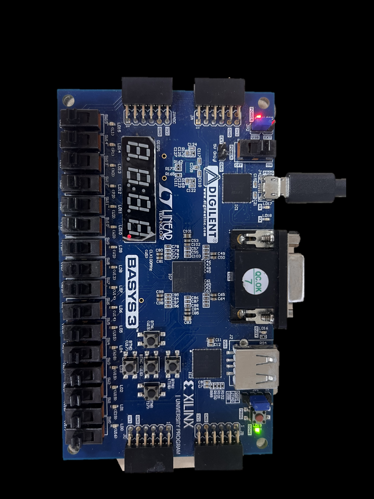
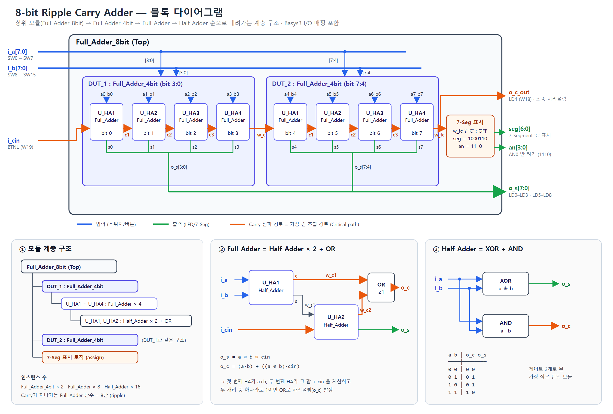
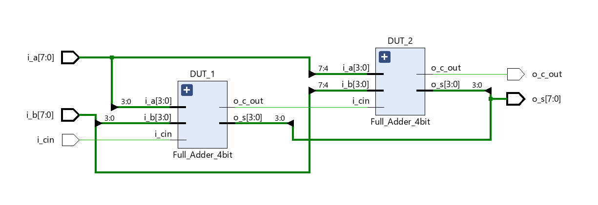
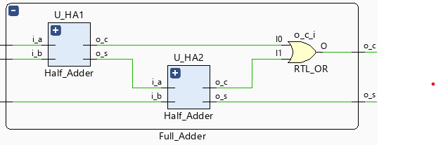
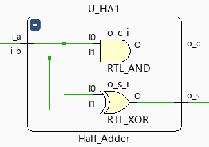
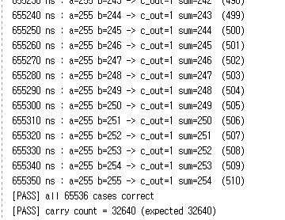
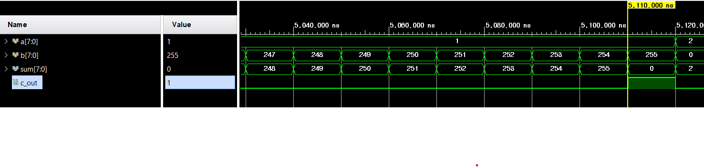
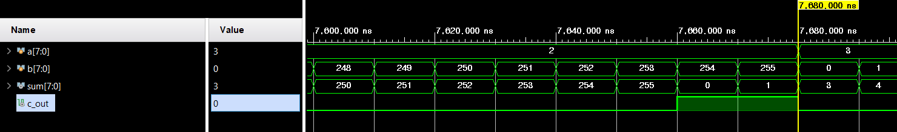
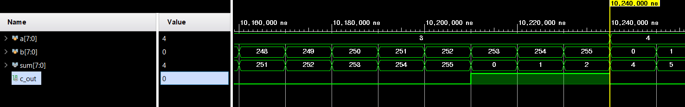

남은 과제는 지연·글리치 같은 조합 회로의 한계 검증
Half Adder부터 단계적으로 만들고, 아래 모듈을 인스턴스로 불러 위 모듈을 조립
| 항목 | 내용 |
|---|---|
| Tool | Vivado 2020.2 |
| Board | Basys3 · Artix-7 xc7a35tcpg236-1 |
| Language | Verilog HDL |
| 편집 · Lint | WSL Ubuntu + vim + Verilator |
| 입력 | SW0~7 = A, SW8~15 = B, BTNL = cin |
| 출력 | LED = sum, 7-Seg 'C' = carry |
assign·인스턴스가 동시에 동작#delay, $display는 시뮬레이션 전용ASIC은 Fab에 올리면 수정 불가 → FPGA로 먼저 구현·검증, 고치면 비트스트림만 다시 다운로드

| Basys3 | |
|---|---|
| FPGA | Artix-7 XC7A35T · LUT 20,800 · FF 41,600 |
| I/O | 스위치 16 · 버튼 5 · LED 16 · 7-Segment 4자리 |
| Clock | 100 MHz (W5) |
| SW | Vivado 합성·구현 → Hardware Manager로 USB-JTAG 다운로드 |
| 활용 분야 | ASIC 프로토타이핑, 통신·신호처리, 데이터센터 가속, 자동차·항공 |
전수 검사 + 코너 케이스로 정답 확인 후, 입력 타이밍 차이 · 글리치 · carry 지연 등 조합 회로의 약점 분석
직접 만든 TB와 파형 해석을 AI가 작성한 별도 TB · 다른 시뮬레이터로 교차 검증
클럭(레지스터) 도입, 더 빠른 adder 구조 등 해결 방향 정리

Vivado RTL Schematic으로 계층 연결이 의도대로 된 것 확인
| 모듈 | 구성 |
|---|---|
Half_Adder | s = a ^ b, c = a & b |
Full_Adder | Half_Adder × 2 + OR |
Full_Adder_4bit | Full_Adder × 4, carry 직렬 연결 |
Full_Adder_8bit | 4bit × 2 + carry 시 7-Seg 'C' |



Basys-3-Master.xdc에서 필요한 줄만 살려 포트 이름으로 매핑 (LVCMOS33)
| 신호 | 보드 | 핀 |
|---|---|---|
i_a[7:0] | SW0 ~ SW7 | V17 … W13 |
i_b[7:0] | SW8 ~ SW15 | V2 … R2 |
i_cin | BTNL | W19 |
o_s[7:0] | LD0~3, LD5~8 | U16 … V13 |
o_c_out | LD4 | W18 XDC 추가 필요 |
seg[6:0] / an[3:0] | 7-Segment | W7 … U7 / U2 … W4 |
seg = 1000110 → a·d·e·f 점등 = 'C'an = 1110 → 맨 오른쪽 자리만 사용a, b = 0~255 전부(65,536개)를 10 ns 간격으로 넣고 TB가 스스로 PASS/FAIL 판정
carry가 비트를 차례로 건너가며 계산되므로, 입력 후 #10 기다린 뒤 최종 {c_out, sum}을 a + b와 비교. 틀리면 그때의 a, b, sum 출력
a = k 일 때 a + b ≥ 256 이 되는 b는 k개
→ 1 + 2 + … + 255 = 255 × 256 / 2 = 32,640
| TB | 범위 |
|---|---|
tb_Full_Adder_4bit | a, b = 0~15, cin = 0~1 (512개) |
tb_adder | a, b = 0~255, cin = 0 (65,536개) |
for (i=0; i<256; i=i+1) for (j=0; j<256; j=j+1) begin a = i; b = j; #10; if (c_out == 1'b1) carry_cnt = carry_cnt + 1; // if result is not a+b, print a, b and sum if ({c_out, sum} !== {1'b0, a} + b) begin err_cnt = err_cnt + 1; $display("[FAIL] a=%3d b=%3d -> c_out=%b sum=%3d ..."); end end if (err_cnt == 0) $display("[PASS] all 65536 cases correct"); // expected carry count = 1 + 2 + ... + 255 = 32640 if (carry_cnt == 32640) $display("[PASS] carry count = %0d (expected 32640)", carry_cnt);
Vivado 시뮬레이션 콘솔 마지막 부분

| 검사 | 결과 |
|---|---|
| a + b = sum (65,536개) | PASS 오류 0 |
| carry 개수 | PASS 32,640 / 32,640 |
| 4-bit (512개) | PASS 오류 0 |
a = 255 구간 : b가 1 늘 때마다 sum도 1씩 증가, 255 + 255 = 510 → c_out 1, sum 254
a가 1 커질 때마다 carry가 처음 생기는 b가 255 → 254 → 253으로 하나씩 당겨짐



시뮬레이션과 같은 입력을 스위치로 넣어 실제 하드웨어에서 확인
지금 시뮬레이션은 지연이 0이라 조합 회로의 약점은 드러나지 않음. 앞으로 볼 방향
a, b가 동시에 안 바뀌면 그 사이 엉뚱한 중간값이 출력됨. 입력을 시간차를 두고 넣어 확인
carry가 한 단씩 넘어가는 동안 출력이 잠깐 튐. 실제 지연이 들어간 타이밍 시뮬레이션으로 확인
출력을 클럭으로 받으면 중간값·글리치가 밖으로 안 나감. 대신 결과가 1클럭 늦어짐
ripple carry는 비트가 늘수록 느려짐. Carry Look-ahead나 FPGA 전용 덧셈 회로(a + b)와 비교
같은 RTL을 AI(Claude)가 만든 별도 TB로 Verilator 5.051에서 실행
| 검사 | 범위 | 결과 |
|---|---|---|
{c_out, sum} == a + b + cin | 131,072개 | PASS 오류 0 |
7-Seg (seg, an) | 131,072개 | PASS carry일 때만 'C' |
1'b0 고정)합성기가 모듈 경계를 풀고(flatten) 같은 논리를 5입력 LUT에 묶음
create_clock 필요구현 로그(runme.log)의 Critical Warning에서 원인 확인
| 문제 | 원인 | 해결 |
|---|---|---|
Critical WarningVivado 12-1411 | i_cin을 R2에 배정했는데 R2는 이미 i_b[7](SW15)가 사용 중 | i_cin → BTNL(W19)로 이동XDC에 남은 R2 줄 삭제 필요 |
| carry LED 안 켜짐 | 소스엔 o_c_out 포트가 있지만 XDC에 핀 줄이 없음 → 보드 버전은 7-Seg로만 표시 | XDC에 W18 → o_c_out 추가 후 재구현 |
| Timing 분석 불가 | 클럭 · 입출력 지연 제약 없음 (Timing 38-313) | 동작엔 문제 없음, 속도를 볼 때 클럭 제약 추가 |
U_HA1~4 → U_FA0~3 (Half Adder와 혼동)// Half_Adder.v module Half_Adder( input i_a, input i_b, output o_s, output o_c ); assign o_s = i_a ^ i_b; assign o_c = i_a & i_b; endmodule
// Full_Adder.v module Full_Adder( input i_b, input i_a, input i_cin, output o_s, output o_c ); wire w_s1; // 1st Half_Adder sum wire w_c1; // 1st Half_Adder carry wire w_c2; // 2nd Half_Adder carry // stage 1 : i_a + i_b Half_Adder U_HA1 (.i_a(i_a), .i_b(i_b), .o_s(w_s1), .o_c(w_c1)); // stage 2 : (i_a + i_b) + i_cin Half_Adder U_HA2 (.i_a(w_s1), .i_b(i_cin), .o_s(o_s), .o_c(w_c2)); assign o_c = w_c1 | w_c2; endmodule
// Full_Adder_4bit.v module Full_Adder_4bit( input [3:0] i_a, input [3:0] i_b, input i_cin, output o_c_out, output [3:0] o_s ); wire w_c1, w_c2, w_c3, w_c4; Full_Adder U_HA1(.i_a(i_a[0]), .i_b(i_b[0]), .i_cin(i_cin), .o_s(o_s[0]), .o_c(w_c1)); Full_Adder U_HA2(.i_a(i_a[1]), .i_b(i_b[1]), .i_cin(w_c1), .o_s(o_s[1]), .o_c(w_c2)); Full_Adder U_HA3(.i_a(i_a[2]), .i_b(i_b[2]), .i_cin(w_c2), .o_s(o_s[2]), .o_c(w_c3)); Full_Adder U_HA4(.i_a(i_a[3]), .i_b(i_b[3]), .i_cin(w_c3), .o_s(o_s[3]), .o_c(w_c4)); assign o_c_out = w_c4; endmodule
// Full_Adder_8bit.v (Top, board version) module Full_Adder_8bit( input [7:0] i_a, input [7:0] i_b, input i_cin, output o_c_out, output [7:0] o_s, output [6:0] seg, output [3:0] an ); reg [6:0] r_txt = 7'b1000_110; // 'C' wire w_fc, w_c; assign an = 4'b1110; assign seg = w_fc ? r_txt : 7'b1111_111; assign o_c_out = w_fc; Full_Adder_4bit DUT_1(.i_a(i_a[3:0]), .i_b(i_b[3:0]), .i_cin(i_cin), .o_c_out(w_c), .o_s(o_s[3:0])); Full_Adder_4bit DUT_2(.i_a(i_a[7:4]), .i_b(i_b[7:4]), .i_cin(w_c), .o_c_out(w_fc), .o_s(o_s[7:4])); endmodule